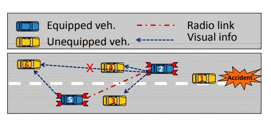
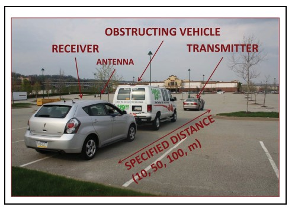

2022 Portuguese Legislative Election
Created a streamlit app that, based on the aggregate results of polls, allows the use to:
view poll results and overall seat distribution.
view seat distribution per electoral district.
analyze coalition and view probabilities of absolute majority and viability for each of them.
visualize probability of each candidate in the party lists to be elected.
View app (in portuguese)
2022 FIDE Candidates Tournament
Created a streamlit app to review the 2022 FIDE Candidates Tournament games. For each of the 56 games it is possible to:
replay the game.
see white and black clock trajectories.
see the game evaluation.
get some piece-action statistics.
View app
DeepPatient: Leveraging EHR data to
predict patient outcome
The goal of this work is to find a suitable representation of all patient data that is collected during their hospital stay in order facilitate clinical prediction tasks (for example, predict an unplanned ICU transfer in the next 24/48h). Early detection of patient deterioration is very important to improve clinical outcomes. For each hour sepsis treatment is delayed, the patient's risk of death increases by 4 percent (New England Journal of Medicine). It also helps reducing as hospital costs a patient as an ICU stay is much more costly to the hospital than a standard ward room.
View presentation (in portuguese)
COVID-19 in Portugal
i) Created a COVID-19 dashboard for Portugal using the government health authority data provided by Data Science for Social Good Portugal. In this dashboard it is possible to:
view the overall number of cases, deaths, estimated Rt, hospitalization and tests.
view the same numbers detailed by regional health authority.
make comparisons bewtween different dates and age groups.
view charts showing evolution bewtween Mar'20 and Mar'22 .
View dashboard (in portuguese)
ii) From these data, it is also possible to create insightful plots and animations. In this one, which shows hospitalized patients (total and ICU) versus number of active cases in Portugal, it is possible to see all the 'waves' and the burden they caused on the hospitals. View animation (in portuguese)
iii) Effect of COVID-19 in the overall mortality:
All-cause mortality data from Portugal in 2020 e 2021 is comparted to the 2009-2019 period. The data, collected from the Mortality Surveillance Electronic System, shows above average number of deaths staring in March of 2020 and peaking in early 2021.View animation (in portuguese)
Tableau Public Dashboards
A miscellanea of data visualizations using Tableau Public.
What Policymakers know about Women and Girl Issues
A PowerBI dashboard that shows the how accurate were 109 policymakers surveyed in five countries (Indonesia, India, Kenya, Senegal and Colombia) on girl/women issues. The distance from the center of the target encodes the information about how accurate (inaccurate) was the estimate by the policy maker. I used the symmetric percentage error to give roughly the same weight to underestimations and overestimations. After defining the distance from the origin, the angle was randomly selected between 0 and 360 degrees to position the marker. I used color to convey the information of how many under/over estimations were made.
View dashboard
Analysis of Heart Sounds
Auscultation is widely applied in clinical activity,
nonetheless sound interpretation is dependent on clinician training and experience. Heart sound features such as spatial loudness, relative amplitude, murmurs, and localization of each component may be indicative of pathology. Two outocomes: 1) Used signal processing techniques to create segmentation algorithm to extract heart sound
components (S1 and S2) based on its time and frequency characteristics. 2) Created a set of features (from time, frequency, perceptual and non-linear/chaos domains) from heart sounds collected with an electronic stethoscope to detect heart murmurs.
Heart sound segmentation paper,
Murmur detection paper
ExpertBayes: Automatically Refining Manually Built Bayesian Networks
Bayesian network structures are usually built using
only the data and starting from an empty network or from
a na¨ıve Bayes structure. Very often, in some domains, like
medicine, a prior structure is already known based on expert
knowledge. This structure can be automatically or manually
refined in search for better performance models. In this work,
we take Bayesian networks built by specialists and show that
minor perturbations to this original network can yield better
classifiers, while maintaining most of the interpretability of the
original network.
View paper
Trusted Storage over Untrusted Networks
We focus on the problem of secure distributed storage
over multiple untrusted clouds or networks. Our main contribution is a low complexity scheme that relies on erasure coding techniques for achieving prescribed levels of confidentiality and reliability. Using matrices that have no singular square submatrices, we
subject the original data to a linear transformation. The resulting
coded symbols are then stored in different networks. This scheme
allows users with access to a threshold number of networks to reconstruct perfectly the original data, while ensuring that eavesdroppers with access to any number of networks smaller than this
threshold are unable to decode any of the original symbols. This
holds even if the attackers are able to guess some of the missing
symbols. We further quantify the achievable level of security, and
analyze the complexity of the proposed scheme.
View paper

Seeing is Believing–Enhancing Message Dissemination in
Vehicular Networks Through Visual Cues
One of the stumbling blocks for implementation
of Vehicular Ad Hoc Networks is the penetration rate: the
percentage of vehicles that have the communication equipment
installed. As the equipment deployment is unlikely to happen
instantaneously, it is important to explore the performance gains
achievable at low penetration rates. This especially pertains to
safety applications, which are expected to provide life-saving
information to all drivers on the road within a given region. We
propose a technique that can be employed by safety applications
to address the low penetration issue. By using visual cues on the
equipped vehicles, such as specific patterns of hazard warning
lights, we show that for all but the lowest vehicle densities, a
radio penetration rate of 30% is sufficient to inform more than
95% of drivers in the region of interest in a timely manner.
View paper

Impact of Vehicles as Obstacles in Vehicular
Ad Hoc Networks
A thorough understanding of the communications
channel between vehicles is essential for realistic modeling of
Vehicular Ad Hoc Networks (VANETs) and the development of
related technology and applications. The impact of vehicles as
obstacles on vehicle-to-vehicle (V2V) communication has been
largely neglected in VANET research, especially in simulations.
Useful models accounting for vehicles as obstacles must satisfy
a number of requirements, most notably accurate positioning,
realistic mobility patterns, realistic propagation characteristics,
and manageable complexity. We present a model that satisfies
all of these requirements. Vehicles are modeled as physical
obstacles affecting the V2V communication. The proposed model
accounts for vehicles as three-dimensional obstacles and takes
into account their impact on the LOS obstruction, received signal
power, and the packet reception rate.
View paper